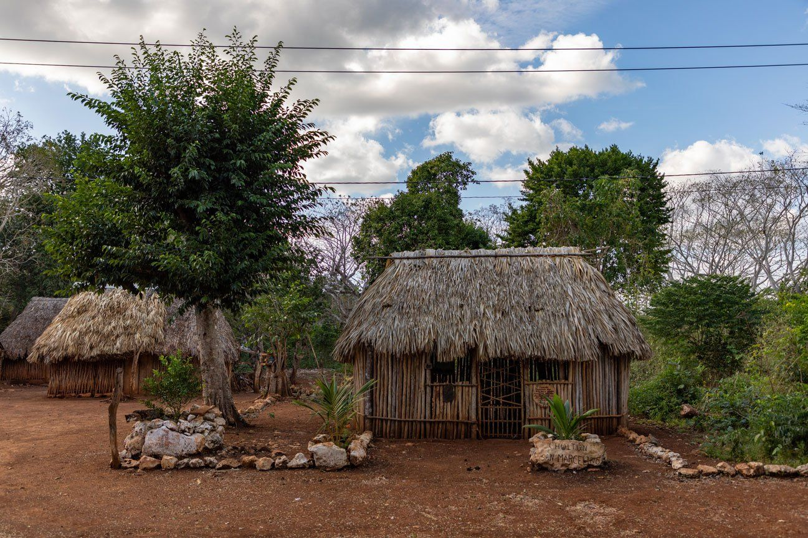
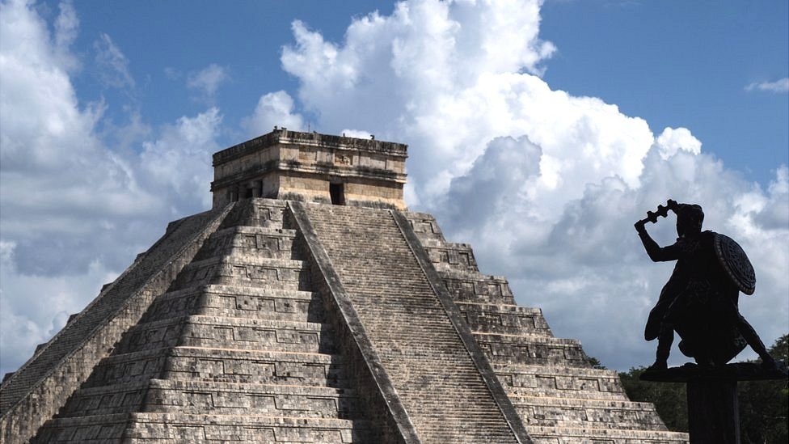

PUEBLOS
Los pueblos mayenses o mayas son un macro grupo etnolongüisto originario de Mesoamerica que se ha desarrollado desde el periodo preclástico mesoamericado hasta la actualidad. El término "maya" y "mayense" es una forma colectiva de nombrar a una serie de pueblos y grupos étnicos relacionados de la región, sin embargo este término es un exónimo del cual no se tiene registro prehispánico y cada uno de estos pueblos mantiene su propia autodenominación, cabe resaltar que desde la época prehispánica los diversos pueblos no estaban unificados en una conciencia de identidad en común o política ya que cada uno estaba diferenciado por lenguas, tradiciones, costumbres e incluso influencias culturales distintas sin embargo mantienen elementos que los unen en una misma raíz.
En la actualidad existen alrededor de 30 etnias mayenses diferenciadas cultural y lingüísticamente entre las que destacan los tsotsiles, los mayas, los tseltales, los k'iche' y los mam, quienes son los descendientes directos de la civilización y cultura maya que ha existido desde hace aproximadamente cuatro mil años.

Principales Pueblos Mayenses Actuales:
Q'eqchi' (Kekchí): Ubicados principalmente en Guatemala, Belice y el sur de México, es uno de los grupos más grandes.
Quiché (K'iche'): Principalmente en Guatemala y México.
Maya Yucateco: Habitan la península de Yucatán (México), conocidos por mantener el idioma maya peninsular.
Tzotzil y Tzeltal: Asentados en Chiapas, México.
Chontales de Tabasco: Ubicados en el estado de Tabasco, México.
Lacandones Situados en la selva lacandona de Chiapas
Kaqchikel: Grupos numerosos, mayormente en el altiplano de Guatemala.
Chuj, Akateco, Q´anjob´al : Otros grupos mayenses destacados en la región.
Existieron numerosos grupos con identidad propia. Entre ellos destacan los itzáes, vinculados a Chichén Itzá; los cocomes, importantes en Mayapán; los tutul xiúes, también en la península de Yucatán; los lacandones en la selva chiapaneca; y los mayas yucatecos. En las tierras altas de Guatemala sobresalieron los quichés (k’iche’), cakchiqueles (kaqchikel) y mames, mientras que en el sur de México destacan los tzotziles y tzeltales.
Cada grupo tenía su propia organización política. No existía un solo gobierno, sino múltiples ciudades-estado independientes que en ocasiones formaban alianzas o entraban en guerra. Centros como Tikal y Calakmul fueron grandes potencias que compitieron entre sí por el control territorial, comercial y político.
Las actividades económicas variaban según la región. En las zonas selváticas se practicaba la agricultura mediante la técnica de roza, tumba y quema. En áreas cercanas a ríos y costas, la pesca y el comercio marítimo eran fundamentales. Existían rutas comerciales muy activas que conectaban distintas ciudades y permitían el intercambio de productos como cacao, jade, obsidiana, sal, miel y textiles.
La vida cotidiana estaba profundamente ligada a la comunidad. Las familias vivían en casas sencillas hechas de materiales naturales como madera y palma. La mayoría de la población se dedicaba a la agricultura, mientras que los artesanos elaboraban cerámica, tejidos y herramientas. Los comerciantes recorrían largas distancias para intercambiar productos.
Las creencias religiosas influían directamente en la vida de los pueblos. Cada grupo tenía templos y centros ceremoniales donde realizaban rituales, ofrendas y celebraciones. Los sacerdotes tenían gran importancia, ya que interpretaban los calendarios y los fenómenos naturales. Las lenguas mayas eran muy diversas y reflejaban la identidad de cada pueblo. Aunque compartían un origen común, cada grupo desarrolló su propia variante lingüística. Estas lenguas no solo servían para la comunicación, sino también para transmitir conocimientos, tradiciones e historia de generación en generación.

Los pueblos mayas también desarrollaron sistemas de adaptación al entorno. En regiones con escasez de agua, construyeron reservorios y aprovecharon cenotes; en zonas montañosas, adaptaron la agricultura mediante terrazas. Esto demuestra su gran capacidad para vivir en distintos ambientes.
En la actualidad, los pueblos mayas siguen presentes en regiones como Yucatán, Quintana Roo, Guatemala y Belice. Conservan muchas de sus tradiciones, como la lengua, la vestimenta tradicional, la medicina ancestral y las prácticas agrícolas, manteniendo viva una herencia cultural milenaria. A lo largo del tiempo, estos pueblos han enfrentado cambios, conquistas y transformaciones, pero han logrado preservar su identidad. Su diversidad, resistencia y continuidad los convierten en una de las culturas vivas más importantes del continente americano.